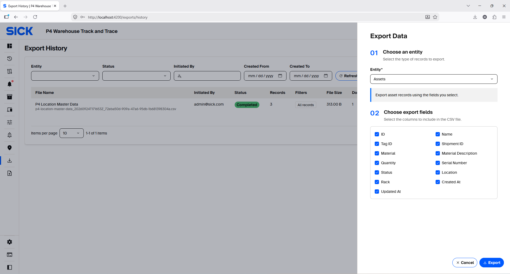
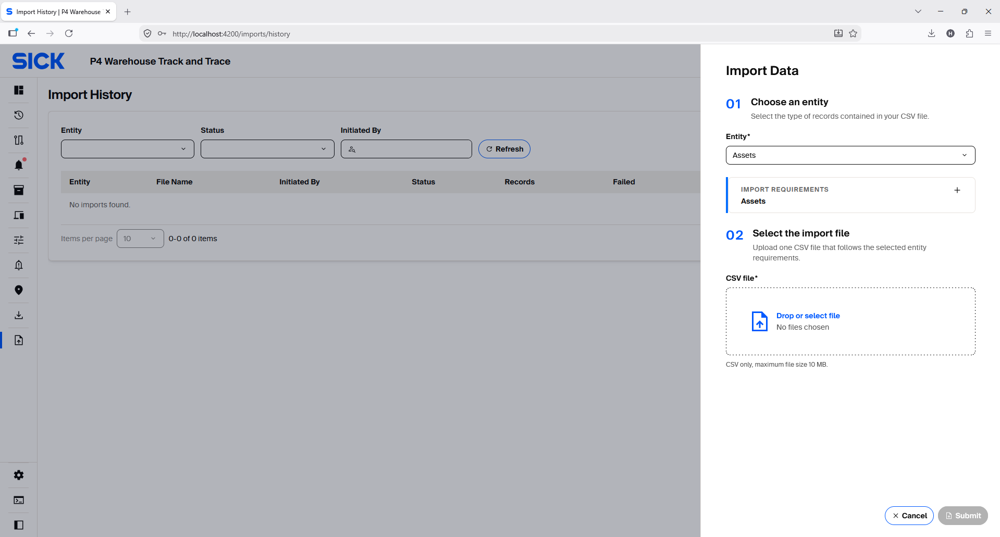
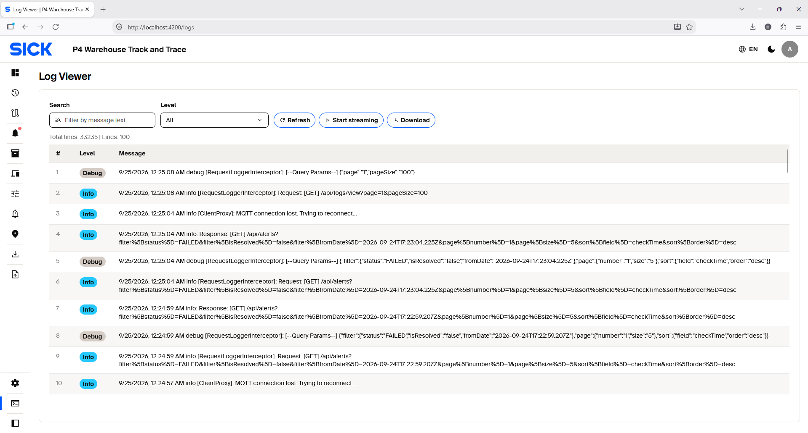
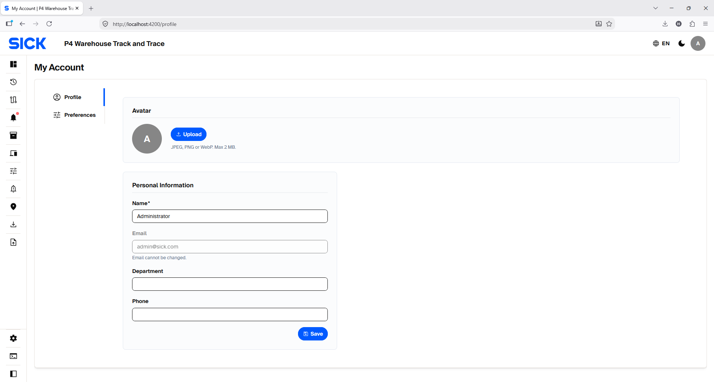
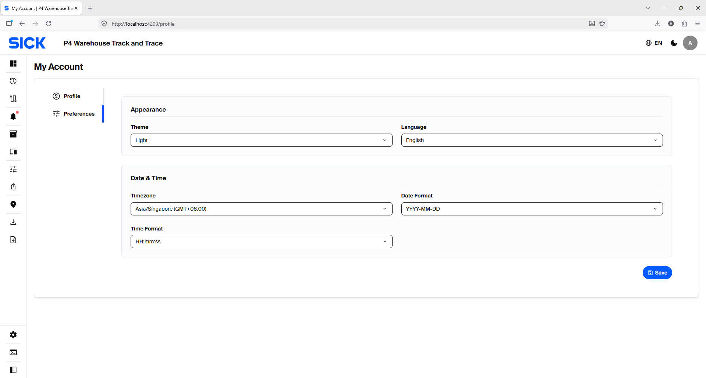

Access, Import/Export & Logs
Understand Admin/Viewer access and use import, export, profile and diagnostic functions.
Admin vs Viewer access
The default web access model contains two account types: Admin and Viewer.
| Account type | Typical behavior |
|---|---|
| Admin | Full configuration and operational control where permitted, including master data, Settings, RFID rules, Alert rules, imports/exports, movement planning and monitoring. |
| Viewer | Performs warehouse Storage and Dispatch operations, monitors operational pages such as Dashboard, Assets, Locations, Devices, Scan Histories, Asset Movements and Alerts without changing configuration. |
Import, Export and operational records
Export History
Use Export History to review and download previous exports. For a new export, select only the entity and fields needed for the task.

Import History
Use Import History to review previous CSV imports. Before importing Assets, verify the template fields, Shipment values and RFID Tag IDs, then review the import result.

Log Viewer
Log Viewer is for administrator diagnostics. Use search, level filters and live streaming when investigating an application issue. For normal operations, use Alerts, Scan Histories and Asset Movements.

Profile and Preferences
My Account → Profile stores personal account information. Preferences control language and date/time display only; they do not change warehouse rules.

